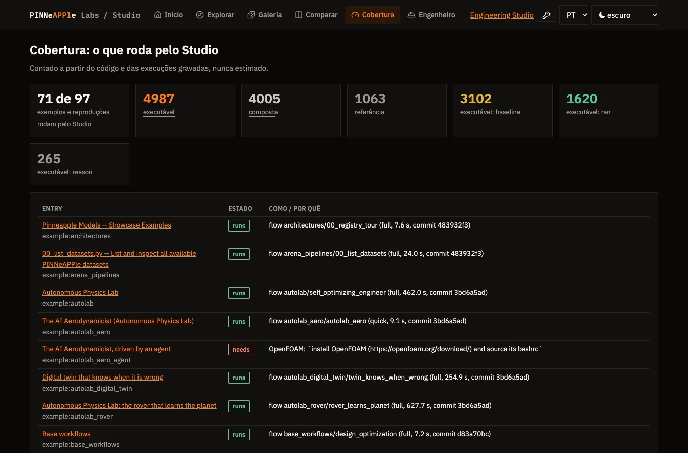

O prazo
Uma semana para montar o caso, outra para rodar, mais uma para conferir. Quando o resultado chega, a decisão já foi tomada no chute.
PINNeAPPle Labs · engenharia assistida por física
Você descreve o problema. A gente diz se dá para resolver, qual método usar e quanto custa, e entrega o resultado com a conta aberta. Hoje os casos rodam com o nosso time; o PINNeAPPle Studio, que faz isso sozinho, chega em 2027 e já tem lista de pré-acesso.
O primeiro botão abre o WhatsApp com o texto pronto. O pré-acesso são três perguntas, e o convite sai em 2027.

A apresentação
A apresentação que fizemos no evento da SIMR: o pedido escrito, a busca, a execução e o relatório, sem corte no meio. É o jeito mais rápido de ver o que o PINNeAPPle Studio faz.
O problema
Não é falta de software. É tempo, custo e, principalmente, confiança no número que sai.
Uma semana para montar o caso, outra para rodar, mais uma para conferir. Quando o resultado chega, a decisão já foi tomada no chute.
Licença, máquina parada e especialista. Às vezes a simulação custa mais caro que a decisão que ela deveria sustentar.
O resultado sai colorido e bonito, e ninguém sabe se está certo. Sem uma referência externa, o número vira opinião.
O que é
A maioria das ferramentas de simulação entrega um campo colorido e deixa a interpretação com você. O Studio faz o caminho contrário: começa no pedido, escrito em português comum, e termina num relatório que diz o que foi feito, o que foi conferido e o que ainda não foi provado.
Por baixo está a biblioteca aberta da PINNeAPPle: cada ferramenta é uma função real, com assinatura, unidade, faixa de validade e o histórico de testes. A plataforma não inventa capacidade: ela encontra o que existe, confere se o seu caso cabe ali e executa em ambiente isolado.
Contagens lidas do Studio na versão atual, as mesmas que a tela de cobertura mostra, a partir do código e das execuções gravadas.
Do pedido ao relatório
Quatro etapas entre a frase escrita e o relatório assinado. Nenhuma delas exige que você monte um caso de simulação.
Uma frase basta: “dissipador de calor com aletas para 60 W”. A plataforma estrutura o pedido e mostra o que já existe para aquilo.
Quatro respostas possíveis: cobre e roda; falta um dado (e ela pergunta só esse); cobre em parte (e diz o que teria de mudar); ou não cobre (e diz por quê).
Os seus números são comparados com a faixa em que aquela ferramenta já foi validada. Fora da faixa, o resultado não é apresentado como se valesse.
Com as verificações que rodaram, as que não rodaram, a versão do código, o tempo e a memória gastos e o hash de cada arquivo.
Cinco pipelines que a base já gerou, cada um com o artigo inteiro: o carro em CFD 3-D, o rover que aprende o solo, o gêmeo dentro do Unity, a busca evolutiva de construções de bloco e o El Niño de 1997.
O que você vai poder fazer
Cada um com um exemplo que já rodou na base aberta. É o que o produto vai colocar na frente de quem não é especialista em método numérico.
Modelo substituto
A simulação que você já rodou vira um modelo que responde na hora. Serve para responder “e se?” sem pagar o preço de uma simulação por pergunta.
no dissipador: ~200 mil vezes mais rápido, com 4,46% de erro médio
Gêmeo digital
O modelo passa a andar ao lado do dado real, com o erro declarado, e avisa antes de um limite ser cruzado.
no HX-201: erro de 0,216 °C e alarme 2,6 h antes
Otimização de projeto
Milhares de geometrias avaliadas contra objetivos que brigam entre si, com o mapa de trocas no lugar de uma resposta única.
em 1.920 asas: −13% de CO₂ por passageiro-quilômetro
Verificação
O resultado é medido contra a física, o ensaio ou a norma, e não contra ele mesmo. O que não foi checado aparece como não checado.
pegou resíduo 100× acima do limite num modelo já treinado
CFD
Geometria, malha, solver, pós-processamento e a comparação com a referência, na mesma sessão.
erosão em curva de 90°: 1,05–1,49× do ensaio publicado
Dimensionamento rápido
Cálculo fechado para o caso do dia: dissipador, placa, elemento. Segundos em vez de horas, contra correlação publicada.
dissipador: 0–5% contra a literatura
Por que dá para confiar

Entra e sai
A mesma lista serve para os dois lados: se o que você tem não cobre o que entra, a plataforma diz isso antes de rodar.
O produto por dentro
Nada de mockup: são capturas da aplicação em desenvolvimento, com os dados de uma execução real.


Veja rodando
Este vídeo é uma gravação da aplicação, com legenda: a busca em português, a escolha da ferramenta, a execução e a volta com as verificações. Nada foi encenado. A espera do solver foi cortada. O corte preto no meio do vídeo marca onde.
Mais dois apps da base
O Studio executa as ferramentas da biblioteca. Estes dois vídeos são apps da base rodando: dimensionamento térmico e preflight de simulação.
Estado atual, sem marketing
A plataforma é construída em módulos. É mais honesto dizer o que está pronto do que fingir que tudo chegou junto.
| Módulo | O que faz | Quando |
|---|---|---|
| Studio e catálogo | Busca, filtros, execução de ferramentas da base, relatório e evidência | roda hoje |
| Engenheiro (intake) | Pedido em texto, perguntas de esclarecimento e plano aprovável | roda hoje |
| CFD / Solvers | Caso completo com solver externo e comparação com referência | em 2027 |
| VeriPhysics | Checagens de física, convergência e cobertura sobre modelos e resultados | em 2027 |
| Surrogate Factory | Treino de substituto com domínio de validade declarado | em 2027 |
| PINNeAPPle Twin | Replay de ativo com alarme e erro declarado, depois telemetria ao vivo | em 2027 |
Do que já rodou
Seis experimentos abertos, cada um com artigo inteiro: o que foi medido, contra o que foi comparado e o que ainda não está provado.
Artigos
Um experimento por artigo, com imagens, vídeo e os números que saíram da execução. Inclusive os que limitam o resultado.

Uma placa fria com 50 layouts, um FNO de 1,18 milhão de parâmetros treinado em 133 s e 1,7% de erro contra a solução de volumes finitos. E o cartão de confiança dizendo não.
13 de novembro de 2026Três caminhos entre o PINNeAPPle e o Unity: o gêmeo exportado como projeto, uma cena do Unity virando camada OpenUSD com física, e uma ponte HTTP que responde em 23 ms enquanto o jogo roda.
13 de novembro de 2026
Primeira passagem, espectro de Koopman, sensores escolhidos por informação de Fisher, análise dimensional e indicadores de alerta. Cada um conferido contra uma resposta que não veio do modelo.
13 de novembro de 2026Quem faz
A PINNeAPPle começou como uma biblioteca pessoal para não ter de confiar: cada resultado carrega a referência contra a qual foi conferido. Virou produto quando ficou claro que o problema não é o modelo, é a falta de prova.
Dizer “não” faz parte. Num caso de mobilidade de rover, o método numérico clássico era mais rápido e mais exato que a rede; a recomendação foi o método clássico.

Físico de formação, une física, IA e engenharia para levar modelos científicos a aplicações reais. Criou o PINNeAPPle e atua com IA aplicada a problemas de engenharia e indústria no Brasil.

Pré-acesso
O Studio abre em 2027, em prévia fechada. Quem entra na lista recebe o convite antes, na ordem de inscrição, e ajuda a decidir o que entra primeiro.
O e-mail serve só para o convite do pré-acesso. Sem spam, e dá para sair em um clique.
Traga o seu caso
Mande o caso. Respondemos com um escopo fechado e uma métrica de sucesso mensurável, ou dizemos que o método clássico resolve melhor.